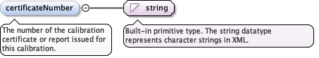
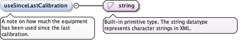

The procedure followed and the data recorded during thecalibration, as text or as a reference (xlink:href) to anotherobject or an external file such as the calibrationcertificate.
<element minOccurs="0" name="calibrationData" type="gml:StringOrRefType"><annotation><documentation>The procedure followed and the data recorded during the calibration, as text or as a reference (xlink:href) to another object or an external file such as the calibration certificate.</documentation></annotation></element>
<element name="cqlibrationValues" type="diggs:ParameterArrayPropertyType" minOccurs="1" maxOccurs="1"><annotation><appinfo><diggs:deprecated since="3.1.0" replacedBy="diggs:calibrationValues"/></appinfo><documentation>DEPRECATED. Use calibrationValues; this name is a misspelling of it.</documentation></annotation></element>
Values established or reported by the calibration,as named parameters with their values and units - for example acalibration constant, resolution or uncertainty.
<element name="calibrationValues" type="diggs:ParameterArrayPropertyType" minOccurs="1" maxOccurs="1"><annotation><documentation>Values established or reported by the calibration, as named parameters with their values and units - for example a calibration constant, resolution or uncertainty.</documentation></annotation></element>
The number of the calibration certificate or reportissued for this calibration.
Diagram

Type
string
Properties
content
simple
minOccurs
0
maxOccurs
1
Source
<element name="certificateNumber" type="string" minOccurs="0" maxOccurs="1"><annotation><documentation>The number of the calibration certificate or report issued for this calibration.</documentation></annotation></element>
<element name="date" type="gml:TimePositionType" minOccurs="0" maxOccurs="1"><annotation><documentation>The date the calibration was performed.</documentation></annotation></element>
<element name="dueDate" type="gml:TimePositionType" minOccurs="0" maxOccurs="1"><annotation><documentation>The date by which the equipment is due to be calibrated again, as stated on the certificate.</documentation></annotation></element>
A note on how much the equipment has been used since thelast calibration.
Diagram

Type
string
Properties
content
simple
minOccurs
0
Source
<element minOccurs="0" name="useSinceLastCalibration" type="string"><annotation><documentation>A note on how much the equipment has been used since the last calibration.</documentation></annotation></element>
The standard or procedure the calibration followed, asa Specification object or a reference to one - for example aregistry entry for the standard, or the laboratory's ownprocedure.
<element minOccurs="0" maxOccurs="unbounded" name="calibrationMethod" type="diggs:SpecificationPropertyType"><annotation><documentation>The standard or procedure the calibration followed, as a Specification object or a reference to one - for example a registry entry for the standard, or the laboratory's own procedure.</documentation></annotation></element>
The conditions the calibration was performed under, asnamed parameters with values, tolerances and units - for exampleambient temperature and humidity.
<element minOccurs="0" name="calibrationConditions" type="diggs:ParameterArrayPropertyType"><annotation><documentation>The conditions the calibration was performed under, as named parameters with values, tolerances and units - for example ambient temperature and humidity.</documentation></annotation></element>
The reference equipment the item was calibratedagainst, such as a dead-weight tester or a proving load cell, as anEquipment object or a reference to one. The reference equipment'sown certificate, due date and traceability are carried by itscalibrationAuditTrail.
<element minOccurs="0" maxOccurs="unbounded" name="referenceStandard" type="diggs:EquipmentPropertyType"><annotation><appinfo>diggs:AbstractEquipment</appinfo><documentation>The reference equipment the item was calibrated against, such as a dead-weight tester or a proving load cell, as an Equipment object or a reference to one. The reference equipment's own certificate, due date and traceability are carried by its calibrationAuditTrail.</documentation></annotation></element>
A table of calibration points: one row per point, withcolumns such as the reference value applied, the value the itemindicated, the deviation between them and the expanded uncertaintyat that point. The columns, their units and their order aredeclared by the table's parameters. An item calibrated over morethan one range or quantity carries one table for each.
<element minOccurs="0" maxOccurs="unbounded" name="calibrationResults" type="diggs:ResultsPropertyType"><annotation><documentation>A table of calibration points: one row per point, with columns such as the reference value applied, the value the item indicated, the deviation between them and the expanded uncertainty at that point. The columns, their units and their order are declared by the table's parameters. An item calibrated over more than one range or quantity carries one table for each.</documentation></annotation></element>
Database handle for the object. It is of XML type ID, so is constrained to beunique in the XML document within which it occurs. An external identifier for the object inthe form of a URI may be constructed using standard XML and XPointer methods. This is doneby concatenating the URI for the document, a fragment separator, and the value of the idattribute.
Source
<complexType name="CalibrationType"><complexContent><extension base="diggs:AbstractFeatureType"><sequence><element minOccurs="0" name="calibrationData" type="gml:StringOrRefType"><annotation><documentation>The procedure followed and the data recorded during the calibration, as text or as a reference (xlink:href) to another object or an external file such as the calibration certificate.</documentation></annotation></element><choice minOccurs="0"><element name="cqlibrationValues" type="diggs:ParameterArrayPropertyType" minOccurs="1" maxOccurs="1"><annotation><appinfo><diggs:deprecated since="3.1.0" replacedBy="diggs:calibrationValues"/></appinfo><documentation>DEPRECATED. Use calibrationValues; this name is a misspelling of it.</documentation></annotation></element><element name="calibrationValues" type="diggs:ParameterArrayPropertyType" minOccurs="1" maxOccurs="1"><annotation><documentation>Values established or reported by the calibration, as named parameters with their values and units - for example a calibration constant, resolution or uncertainty.</documentation></annotation></element></choice><element name="certificateNumber" type="string" minOccurs="0" maxOccurs="1"><annotation><documentation>The number of the calibration certificate or report issued for this calibration.</documentation></annotation></element><element name="date" type="gml:TimePositionType" minOccurs="0" maxOccurs="1"><annotation><documentation>The date the calibration was performed.</documentation></annotation></element><element name="dueDate" type="gml:TimePositionType" minOccurs="0" maxOccurs="1"><annotation><documentation>The date by which the equipment is due to be calibrated again, as stated on the certificate.</documentation></annotation></element><element minOccurs="0" name="useSinceLastCalibration" type="string"><annotation><documentation>A note on how much the equipment has been used since the last calibration.</documentation></annotation></element><element minOccurs="0" maxOccurs="unbounded" name="calibrationMethod" type="diggs:SpecificationPropertyType"><annotation><documentation>The standard or procedure the calibration followed, as a Specification object or a reference to one - for example a registry entry for the standard, or the laboratory's own procedure.</documentation></annotation></element><element minOccurs="0" name="calibrationConditions" type="diggs:ParameterArrayPropertyType"><annotation><documentation>The conditions the calibration was performed under, as named parameters with values, tolerances and units - for example ambient temperature and humidity.</documentation></annotation></element><element minOccurs="0" maxOccurs="unbounded" name="referenceStandard" type="diggs:EquipmentPropertyType"><annotation><appinfo>diggs:AbstractEquipment</appinfo><documentation>The reference equipment the item was calibrated against, such as a dead-weight tester or a proving load cell, as an Equipment object or a reference to one. The reference equipment's own certificate, due date and traceability are carried by its calibrationAuditTrail.</documentation></annotation></element><element minOccurs="0" maxOccurs="unbounded" name="calibrationResults" type="diggs:ResultsPropertyType"><annotation><documentation>A table of calibration points: one row per point, with columns such as the reference value applied, the value the item indicated, the deviation between them and the expanded uncertainty at that point. The columns, their units and their order are declared by the table's parameters. An item calibrated over more than one range or quantity carries one table for each.</documentation></annotation></element></sequence></extension></complexContent></complexType>